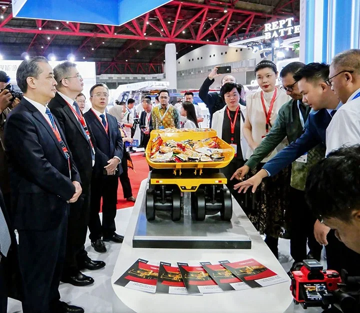
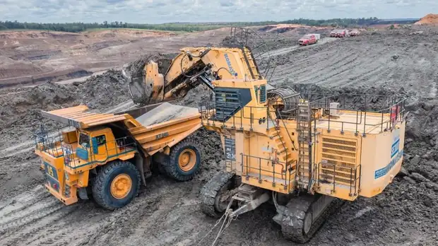
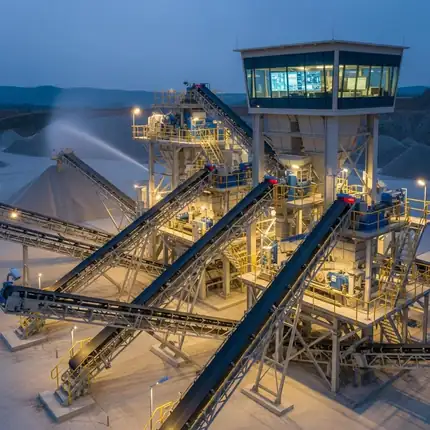
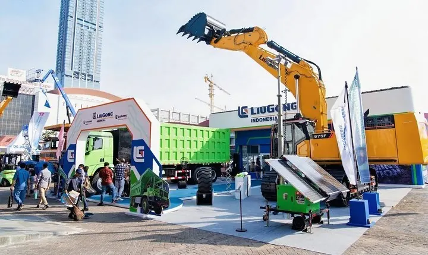
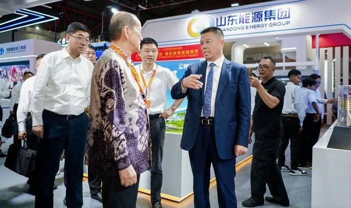
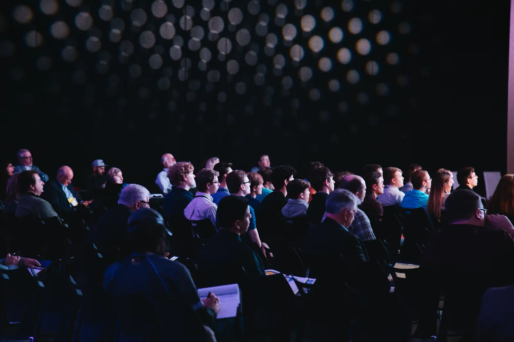
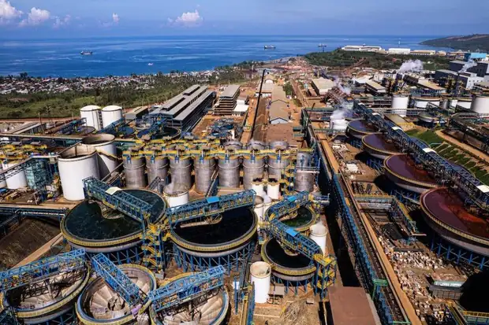

Coal production exceeds
800 million tonnes
About the Exhibition
A dedicated meeting point for mining, mineral processing, smart technology and downstream industries in Indonesia.
01WHAT IS IMDX 2027?One platform.
One platform.
The entire mining &
downstream value chain.
IMDX 2027 is a business-to-business exhibition connecting mining companies, equipment manufacturers, technology providers, processing industries and decision-makers across Indonesia's mining and downstream ecosystem.

Event Information
- 26 – 28 May 20273 days of exhibition and business programs
- JIEXPO Kemayoran, JakartaIndonesia
03WHO WILL YOU MEET?
A focused audience across the mining and downstream ecosystem.

Mining & Industrial Operators
Mining companies, mineral processing and downstream industries seeking solutions, partnerships and investment opportunities.

Equipment & Technology Providers
Manufacturers, solution providers and service companies offering mining equipment, processing technology, automation and digital solutions.

Business Leaders & Industry Professionals
Executives, decision-makers, technical experts, investors and other stakeholders involved in the development of Indonesia's mining and downstream sector.
04WHAT HAPPENS AT IMDX?

Exhibition
Discover industrial solutionsExplore a wide range of equipment, technology and services for mining, processing and downstream operations.

Conference
Exchange market & technical insightsJoin industry-focused discussions on market outlook, technology development, operational excellence and sector opportunities.

Networking
Build practical business connectionsMeet potential partners, customers and industry peers to explore collaboration and create new opportunities.
05THE EXHIBITION EXPERIENCE
Previous Edition Highlights
View the gallery

02 / THE MARKETINDONESIA / GLOBAL MINING
Indonesia — A Core Hub in the Global Mining Landscape
World's largest exporter of
thermal coalNickel output accounts for about
67% of global productionGold, copper and tin reserves
rank among the world's largest
In recent years, the Indonesian government has continued to advance its mineral downstreaming strategy, including export restrictions on raw nickel, bauxite and tin concentrates and requirements for domestic smelting and processing. This has rapidly increased demand for smelting, beneficiation and deep-processing equipment. At the same time, mining areas are accelerating electrification and intelligent transformation, with photovoltaic microgrids and heavy-equipment electrification projects being deployed in major mining regions such as Sulawesi and Kalimantan. Indonesia's annual mining-equipment market has reached approximately US$2.5 billion, with continuing growth in demand for smart mining, green-mine construction and downstream processing equipment.
Source: organizer market overview (concept data — to be verified before publication).03 / HIGHLIGHTSSIX AREAS OF FOCUS
Exhibition Highlights
Mining solutions, downstream innovation and professional connections.